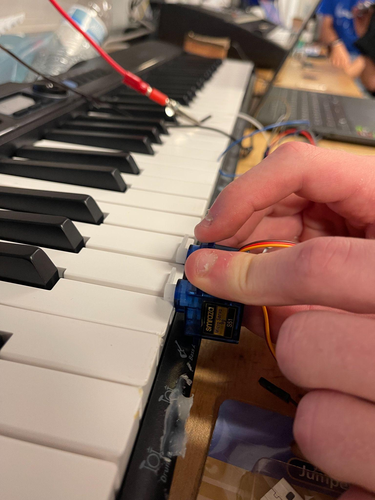
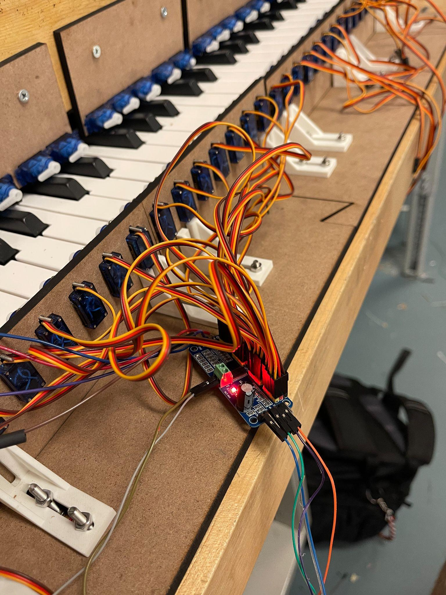

After testing servos and solenoids separately, we started turning those actuator ideas into an actual music-playing machine. The first version of the concept used servos that hit piano keys directly. That made the mechanism easier to prototype because each servo could be mounted near a key and commanded to move between a released angle and a pressed angle.
The first question was whether a small servo could press a key fast enough and hard enough to make useful sound. We found that the maximum rhythm frequency was around 5 notes per second, or about eighth notes at 150 BPM. The same test exposed a mechanical limitation: the servos were only strong enough to make meaningful sound when the piano was set to touchless, and they did not have enough power or velocity to play loudly with touch sensitivity enabled.


Once a single-servo press worked, the next task was coordinating multiple servos in rhythm. We used seven servos to play "Twinkle Twinkle Little Star" in two speeds. I described the critical function as using several servos in the right rhythm, fast enough and strong enough to play a song, while mounting them in the right positions to press the keys. The code represented the song as timestamped events:
struct SongEvent {
unsigned long time;
int note;
bool isOn;
};
const int NOTE_ON_ANGLE = 60;
const int NOTE_OFF_ANGLE = 0;
const unsigned long CHECK_INTERVAL_MS = 25;This event structure was useful because the song was no longer a blocking sequence of delays. Each event had a timestamp, a note number, and an on/off state. The loop could compare the current playback time against each event, move the matching servo, and keep checking at a fixed interval. That made the timing easier to reason about than writing a long chain of delays.
As the prototype grew, direct GPIO control was no longer enough. We moved to an Adafruit PCA9685 PWM servo driver over I2C. That gave one board with 16 channels at address 0x41, mapped to natural MIDI notes from C2 upward. The playback loop waited until a song event's timestamp arrived, found the servo index from the note number, and wrote either the on-angle or off-angle to that channel.
Scaling also made the electronics problems more visible. Soldering issues limited us to one port expander, giving around two octaves and a few notes short of the desired range for the piano part. That changed the project from "can we move a servo?" to "can we build a reliable multi-channel system that survives real wiring, power, and mounting constraints?"
The final timing task was measuring how long a servo press took to register. I used a sensor threshold to detect when the keypress actually happened, then used Welford's running mean and variance algorithm to keep statistics in code. The measured average delay was 78.93 ms, with a sample variance of 56.55 ms^2 and a standard deviation of 7.52 ms. That delay was above 40 ms, but the important part was that it was consistent enough to account for in software.
The biggest lesson from these early piano-player steps was that playing music is a timing problem as much as a mechanical one. A single servo press is easy to demonstrate, but a piano player needs repeatable mounting, enough force, coordinated PWM outputs, and predictable delay compensation. The prototype made the gap between a working actuator and a working robot much clearer.